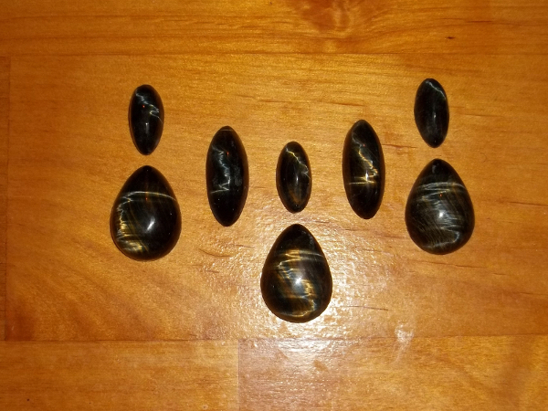

Work-In-Progress:
This is a file knife. It's common for bladesmiths to warm up by reforging
an old broken file or some other piece of scrap. This one won't go through
all the finishing processes of one of the custom knives, but it will eventually
get heat-treated with a small batch of others like it and have a simple handle
added.
Work-In-Progress:
This knife is a lot smaller than the others, and when it's done it
will be a pendant knife that can be worn as jewelry. I'm happy with
the basic design of the handle, but I'm going to re-cast it because
there are a few details I want to change, and because there are a
few process flaws I don't want to try to fix. When it's finished, the
handle will have a two-tone patina of green for the leaves and vines
with a brown background. The sheath will also be a casting, styled to
look like a flower with partially open sides to show the blade, and a
locking mechanism with a camouflaged release button.
Work-In-Progress:
This blade was made from a very high-quality steel
and when polished will have a beautiful wavy heat-treat line. Handle
materials are bone, maple burl, and antler tip. After everything is
fitted and shaped, I'll add some carving and probably an oil finish.

I really enjoy cutting open a rock and deciding how it should be sliced to
bring out the most interesting features. This tiger's-eye had been compressed
and warped, so I cut it at a 90 degree angle from what I usually would and
gave it a high dome, which brought out the lightning-bolt effect instead of a
cat's-eye. These are being paired with moonstone for a necklace.

